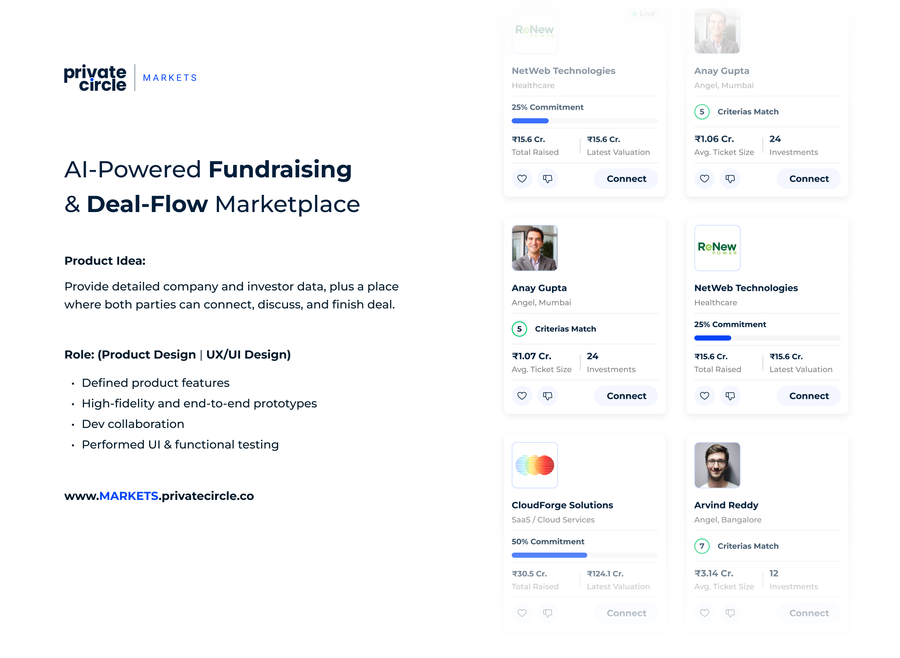
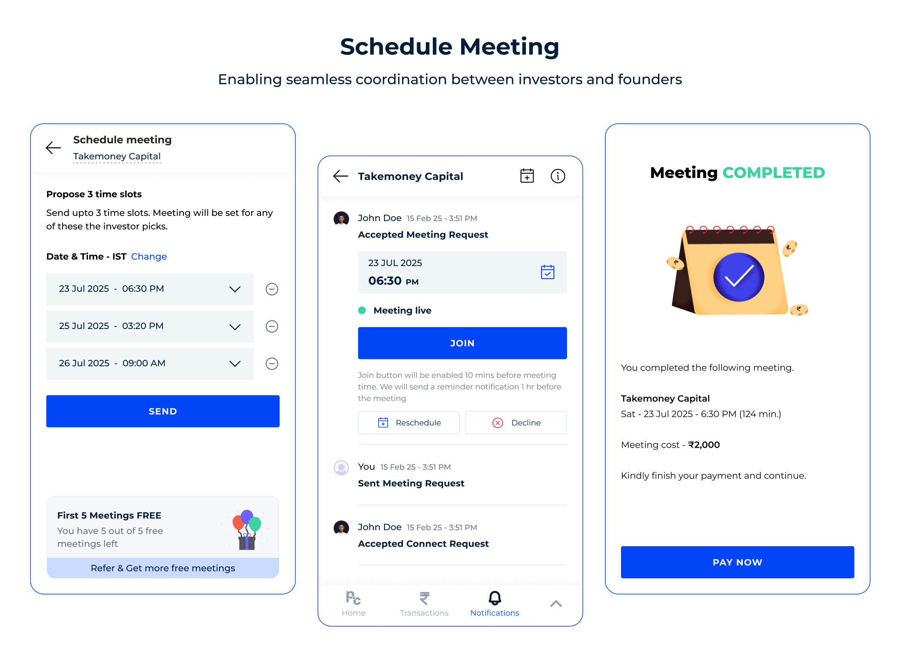
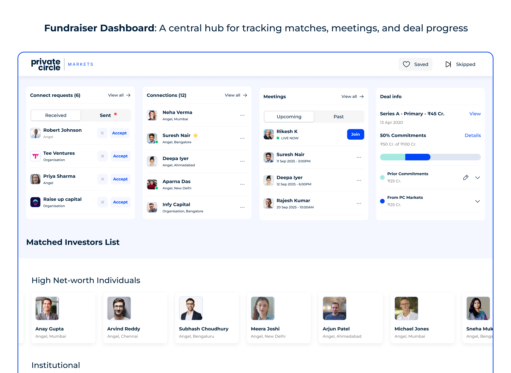
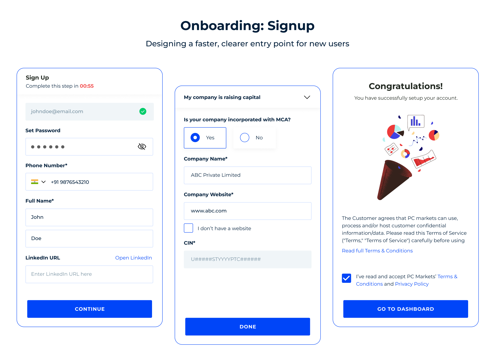

PrivateCircle Markets
AI-Powered Fundraising & Deal-Flow Marketplace
PrivateCircle Markets is an AI-powered private market platform designed to help startups connect with investors and enable investors to discover, evaluate, and manage investment opportunities through data-driven insights.

Product Overview
Business Context: Private equity and startup fundraising are notoriously fragmented. Unlike public exchanges, information is locked behind closed doors, relationships determine deal-flow, and manual paperwork delays critical timelines. Investors spend dozens of hours doing manual verification and searching through scattered company records.
Problem Statement: Startup founders struggle to target qualified investors who match their exact industry vertical and ticket criteria. Conversely, high-net-worth investors (HNIs) and VCs suffer from extreme decision fatigue caused by unfiltered pitches and manual meeting coordination processes.
Product Vision: To establish an end-to-end fundraising marketplace where founders easily present audited company profiles, while investors dynamically discover match suggestions and coordinate meetings directly in a central, trusted platform.
Target Users
- High-Net-Worth Individuals (HNIs)
- Venture Capitalists & PE Directors
- Startup Founders & Capital Advisors
- Intermediary Investment Bankers
My Role & Responsibilities
As the principal designer, I led the user experience and interface design from strategic positioning down to engineering handoff. I worked directly with product managers and developers to architect the database-matching layouts and user flows.
Brainstorming & Planning Canvas
A recreation of our product mapping workspace. We aligned pain points and journeys before sketching widgets.
Inputs & Pain Points
Journey Maps
Feature Priority
Conclusion: Integrate connection logs, active meetings, and suggestions on a unified tabbed dashboard viewport.
Wireframes & Early Exploration
Exploring Layout Alternatives
Initially, we designed tabular rows. However, usability tests showed users couldn't distinguish between VC funds and individual angels.
We pivoted to a grid card interface with a floating popover card for matching factors, keeping users on the same page.

UX Challenges & Solutions
Helping investors quickly identify relevant companies
Investors had to read through multiple document attachments to compare sectors and commitment sizes.
Introduced progressive disclosure with interactive badges displaying criteria match rates instantly.
Managing large amounts of financial information
Displaying capital allocations, cap tables, historical fund sizes, and sectors created high visual noise.
Created a tabbed system grouping Connect requests, Active connections, and Meetings in a unified view.
Before & After UX Improvements
Static financial data tables
Financial details were presented in flat text blocks. Users performed manual comparisons.
Interactive dashboards with hierarchy
Commitments are mapped in visual progress bars paired with matching algorithms.
Complex investor search
Finding profiles required inputting precise query matches, resulting in high empty search states.
Filtered discovery experience
Introduced relational node-mapping, letting investors browse connections visually.
Design Impact
Users transitioned from downloading offline company PDF reports to reading financial details directly online after the profile redesign.
The consolidated dashboard layout led to a measurable increase in active session time and exploration of matching parameters.
Improved search capabilities drove higher discovery rates, contributing directly to platform renewals and subscription retention.
Richer, easily navigable pages significantly improved discovery and referral traffic.
Product Showcase
Unified HNI Investor Dashboard
Unifies Connect requests, active matches, and schedule logs in a clean grid layout.

Match Criteria & Quick Connect popover
Displays match metrics, ticket parameters, and primary CTAs when hovering over specific records.

Fundraising Startup Discovery Feed
Horizontal scroll carousels classifying live commitments, recommendations, and saved cards.
Reflection & Learnings
Fintech UX Complexity: Designing products in the private market space requires balancing dense financial structures with clean readability. Progressive disclosure and unified component libraries allowed investors to consume details incrementally without friction.
Cross-functional engineering: Designing the match engine and booking logs highlighted that UI layouts must account for dynamic string lengths, missing states, and latency fallback indicators cleanly.
Final Outcome
PrivateCircle Markets evolved into a comprehensive private market ecosystem enabling founders and investors to discover opportunities, build connections, manage fundraising activities, and make informed investment decisions through structured data and intelligent workflows.